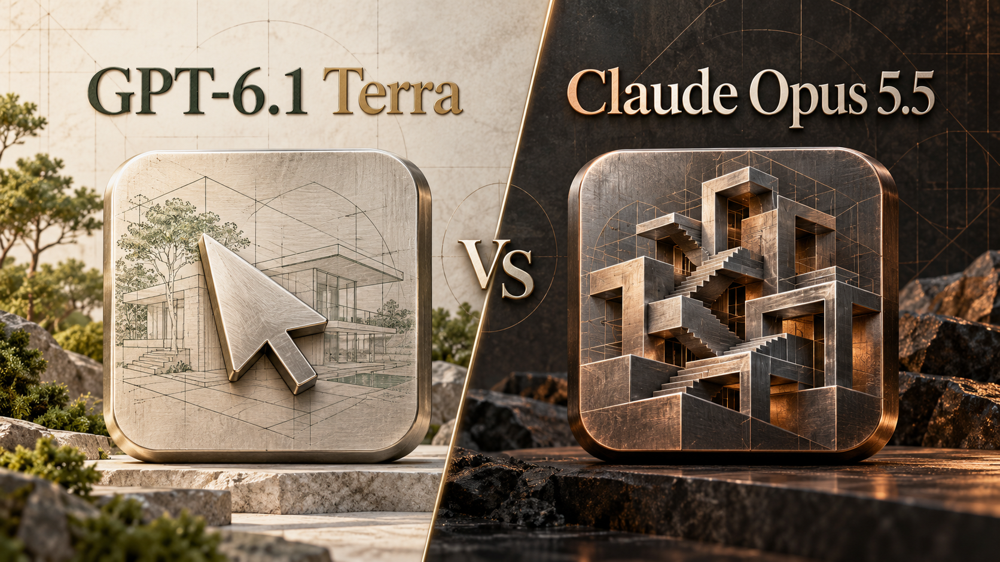

안녕하세요. dev.log입니다.
GPT-6.1 Terra가 나왔습니다. 화면을 읽고 앱을 조작하는 데 힘을 준 OpenAI의 새 모델입니다. 이미 Opus나 Sol에 일을 맡기고 있다면 궁금한 건 하나입니다. 더 저렴한 Terra로도 그 일을 잘 끝낼 수 있을까요?
공개된 결과를 보면 화면을 다루는 반복 업무에는 Terra가 매력적입니다. 어려운 코딩과 추론에서는 Opus·Sol·Astra가 여전히 앞서는 부분이 있습니다. 가격 차이는 큽니다. Terra의 기본 API 입력·출력 단가는 Opus 5.5의 4분의 1입니다.

Terra는 어떤 일을 맡기는 모델일까
Terra가 겨냥한 일은 화면 속 정보를 읽고 다음 행동으로 이어가는 작업입니다. 청구서 내용을 확인해 회계 프로그램에 입력하거나, 도면을 보고 모형을 만드는 식입니다. 글쓰기에도 초점을 맞췄습니다. OpenAI 발표
비교 상대는 Claude Opus 5.5로 잡았습니다. 코딩과 긴 업무를 맡길 때 함께 고려할 모델이고, OpenAI도 Terra 발표에서 Opus와 성능·비용을 비교했습니다. 같은 OpenAI 모델인 Sol과 Astra도 표에 넣었습니다. 기존 모델에서 바꿀 만한지 보기 위해서입니다. Opus 안내
Terra는 ChatGPT Work와 Codex에서 쓸 수 있습니다. 일반 Chat에는 제공되지 않으며, Work의 Advanced 모델 목록에서 선택합니다. Plus·Pro·Business·Enterprise·Edu가 대상이고 계정·관리자 설정에 따라 제공 여부가 달라집니다. 이용 안내
시험별 점수로 보면 달라지는 순위
먼저 OpenAI가 공개한 시험 결과입니다. 화면을 이해하는 능력부터 전문 업무와 코딩까지, 같은 시험 안에서 모델별 점수를 나란히 놓았습니다.
| 시험 · 무엇을 보는가 | Terra | Opus 5.5 | Sol | Astra |
|---|---|---|---|---|
| Agents’ Last Exam v1 · 도구를 쓰는 전문 업무 | 60.0% | 63.2% | 58.6% | 59.3% |
| MMMU-Pro · 이미지 문제 이해 | 85.5% | - | 86.3% | 86.7% |
| Terminal-Bench-Science 0.1 · 과학 연구 코딩 | 58.3% | 63.3%* | 57.0% | 68.1% |
| Terminal-Bench 4.0 · 터미널 코딩 | 50.3% | - | 55.9% | 58.2% |
출처: OpenAI Terra 발표의 시험별 차트. 점수는 높을수록 좋습니다. 모두 추론에 쓰는 양을 최대로 설정한 max 기준이며, 실제 계산량은 모델마다 다릅니다. -는 해당 차트에 점수가 없는 경우입니다. *과학 연구 코딩의 Opus는 다른 모델로 재시도하는 w/ fallbacks 조건입니다.
Terra는 전문 업무 시험에서 Sol·Astra와 비슷한 성적을 냈습니다. 이미지 문제에서도 두 모델과 차이가 작습니다. 화면을 읽고 도구를 쓰는 일을 저렴하게 처리하려는 목적에 잘 맞는 결과입니다.
코딩에서는 시험에 따라 갈립니다. Terra는 과학 연구 코딩에서 Sol을 조금 앞섰지만, 터미널 코딩에서는 뒤처졌습니다. Astra와의 차이도 더 벌어집니다. OpenAI가 복잡한 코딩에는 Sol과 Astra를 권하는 이유를 이 표에서도 볼 수 있습니다.
여러 능력을 합치면 Opus 우위
위 표가 개별 시험이라면, Artificial Analysis의 종합 지수는 코딩·문서·추론 등 10개 평가를 묶어 봅니다. 모델을 여러 업무에 두루 쓰려는 사람에게 참고할 만합니다.
| 모델 | 종합 지수 ↑ |
|---|---|
| GPT-6.1 Terra | 48 |
| Claude Opus 5.5 | 58 |
| GPT-6.1 Sol | 52 |
| GPT-6 Astra | 53 |
출처: Artificial Analysis의 Terra, Opus, Sol, Astra. 2026년 10월 27일, Intelligence Index v4.3.2, 모두 max 기준입니다. 백분율이 아닌 종합 점수이며, Opus는 다른 모델로 재시도하는 default fallback을 포함합니다.
여기서는 Opus가 가장 높고 Terra가 가장 낮습니다. Terra의 화면 작업 강점과 전반적인 업무 성적 사이에는 차이가 있습니다. 어려운 문제를 풀거나 긴 코드 작업을 끝내는 능력을 우선한다면, 상위 모델을 계속 쓸 이유가 남습니다.
초기 사용자들은 어떻게 느꼈을까
출시 직후 반응은 갈립니다. 한 사용자는 Sol에서 오래 기다렸던 Codex 작업을 Terra가 더 빠르게 끝냈다고 썼습니다. 속도 후기
다른 사용자는 픽셀 스타일의 프로젝트 관리 화면을 만들면서 Sol과 Opus의 결과를 더 마음에 들어 했습니다. Terra의 추론 설정을 high에서 max로 올렸지만 만족스럽지 않았고, 사용량도 더 많이 썼다고 합니다. 제작 후기
두 후기 모두 개인 사례입니다. 입력과 추론 설정이 통일된 비교는 아닙니다. 다만 빠르게 답을 받는 것과 원하는 결과를 빨리 완성하는 것은 별개라는 점은 생각해 볼 만합니다. 수정을 여러 번 해야 한다면 처음의 속도 이점도 줄어듭니다.
API 가격 차이는 얼마나 클까
직접 프로그램을 만들어 모델을 호출한다면 비용 차이가 분명합니다. 아래는 사용한 글의 양에 따라 청구되는 API 요금입니다. ChatGPT나 Claude의 월 구독료와는 별도입니다.
| 모델 | 입력 | 출력 |
|---|---|---|
| GPT-6.1 Terra | $1 | $5 |
| Claude Opus 5.5 | $4 | $20 |
| GPT-6.1 Sol | $2 | $10 |
| GPT-6 Astra | $10 | $50 |
100만 토큰당 미국 달러, 2026년 10월 27일 표준 단가입니다. 토큰은 글을 처리하는 단위로 글자 수와 다릅니다. Terra, Opus, Sol, Astra
예를 들어 입력 10만 토큰과 출력 1만 토큰을 쓴다면 Terra는 $0.15, Opus는 $0.60입니다. Sol은 $0.30, Astra는 $1.50입니다. 같은 양을 처리하는 계산에서는 Terra를 네 번 호출해야 Opus 한 번 비용이 됩니다.
이 예시는 저장된 입력 재사용 할인, 도구 요금, 할증과 세금을 제외했습니다. 실제로 다시 요청하면 대화가 길어지면서 처리량도 늘어납니다. Terra는 입력이 272,000토큰을 넘을 때 요청 전체의 입력 단가가 2배, 출력 단가가 1.5배가 되는 점도 확인해야 합니다. 장문 요금 조건
지금 쓰는 모델을 바꿀 만할까
Terra는 비용이 많이 드는 반복 업무를 맡길 때 눈길이 갑니다. 특히 화면에서 정보를 읽고 앱에 옮기는 작업이라면, 이번 전문 업무·이미지 시험 결과와 낮은 단가가 함께 뒷받침합니다.
반면 Opus로 어려운 작업을 잘 처리하고 있다면, 가격만 보고 전부 바꿀 이유는 적습니다. 종합 지수에서는 차이가 있고, 코딩 시험에서도 Terra가 일관되게 앞서지는 않았습니다. Sol과 Astra 역시 복잡한 코드나 연구 작업에서 남겨 둘 만한 근거가 있습니다.
Terra가 저렴한 단가만큼 실제 작업 비용도 줄여 주는지는 원하는 결과까지 몇 번을 고쳐야 하는지에 달려 있습니다.
참고 자료
- 공식 발표·문서: Terra 발표, Terra API, Opus API, Opus 요금, Sol API, Astra API, Work 제공 범위
- 독립 평가: Terra 출시 분석, Terra, Opus, Sol, Astra
- 공개 사용자 경험: 속도 후기, 제작 결과와 사용량 후기